01 · Ночной перрон

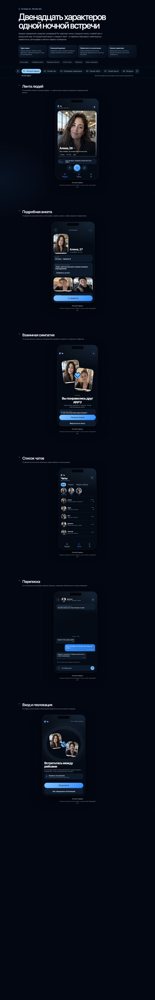
Материалы для визуального ревью мобильного приложения знакомств рядом с Шереметьево. Ниже — 12 направлений; в каждом снимке показаны шесть ключевых экранов: лента, анкета, взаимный лайк, чаты, диалог и вход с геолокацией.
Для анализа сравните читаемость, цельность визуальной системы, уместность для аэропорта и доверие к функциям приватности.

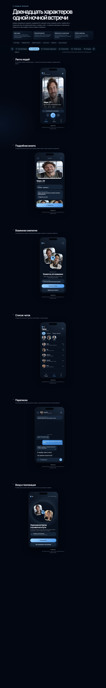
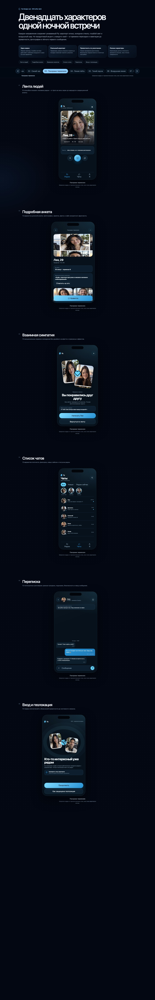
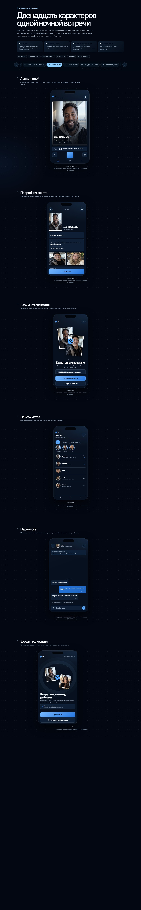
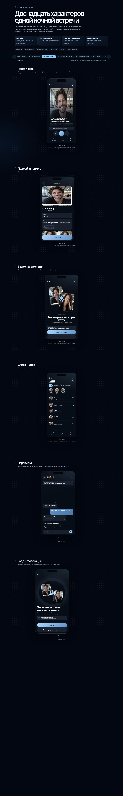
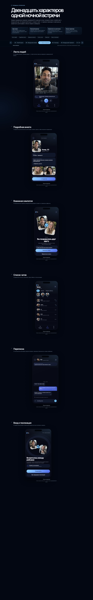
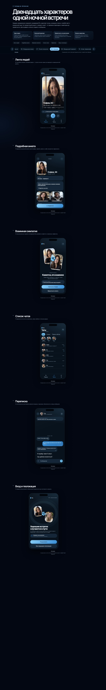
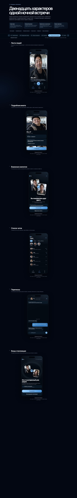
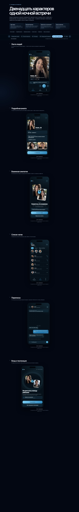
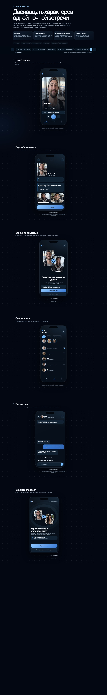
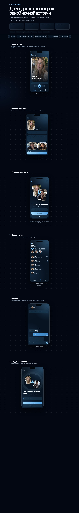